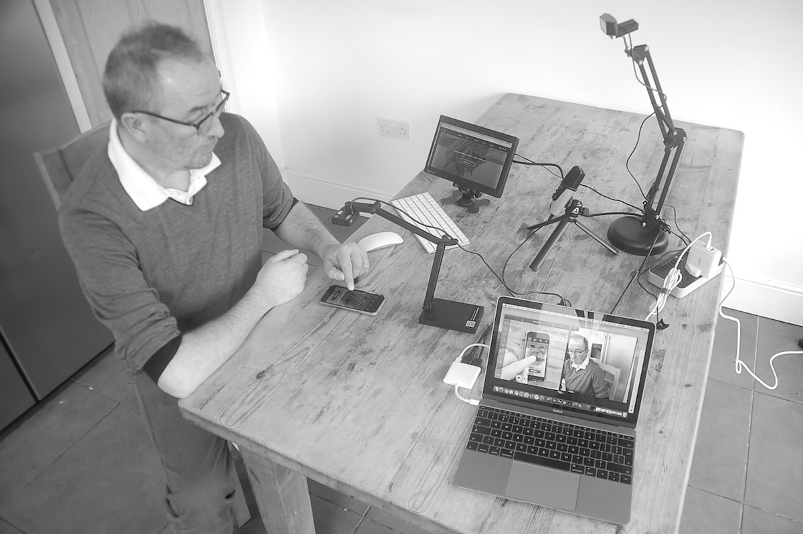

<!doctype html>
<!--Remove this text to recover file--
<html lang="en" dir="ltr">

<head>
    <meta charset="utf-8">
    <meta name="author" content="FraserPeett">
    <meta name="description" content="Fraser_Peett_UX_researcher_Ethical_Code">
    <title>Fraser Peett UX Researcher Henley UK</title>
    <link rel="apple-touch-icon" sizes="180x180" href="apple-touch-icon.png">
    <link rel="icon" type="image/png" sizes="32x32" href="favicon-32x32.png">
    <link rel="icon" type="image/png" sizes="16x16" href="favicon-16x16.png">
    <link rel="manifest" href="site.webmanifest">
    <link rel="mask-icon" href="safari-pinned-tab.svg" color="#5bbad5">
    <meta name="viewport" content="width=device-width, initial-scale=1">
    <meta name="msapplication-TileColor" content="#da532c">
    <meta name="theme-color" content="#ffffff">
    <link rel="stylesheet" type="text/css" href="https://cdnjs.cloudflare.com/ajax/libs/normalize/8.0.0/normalize.min.css">
    <link rel="stylesheet" type="text/css" href="css/style.css">
    <link href="https://fonts.googleapis.com/css?family=Lato:300,400,700" rel="stylesheet">
    <script src="https://kit.fontawesome.com/46a421d071.js" crossorigin="anonymous"></script>
</head>

<body id="about-page">
    <!--About Fraser Peett UX Researcher-->
<!--Remove this text to recover file--
    <header>
        <div class="container">
            <div class="navtoggle" id="myNavtoggle">
                <a href="index.html"></a>
                <nav id="nav">
                    <ul>
                        <li><a href="about.html">About</a></li>
                        <li><a href="process.html">Process</a></li>
                        <li><a href="ethical_code.html">Ethical Code</a></li>
                        <li><a href="#contact" onclick="menuToggle()">Contact</a></li>
                        <li><a href="javascript:void(0);" class="icon" onclick="menuToggle()"><i class="fas fa-bars"></i></a></li>
                    </ul>
                </nav>
            </div>
        </div>
    </header>

    <!--Main Section-->
<!--Remove this text to recover file--
    <main>
        <div id="hero">
            <div class="container">
                <h1>My Ethical Code</h1>
            </div>
        </div>
        <div>
            <div class="container">
                <picture>
                    <source srcset="img/ethicalcode/usability_test_lab_600px.JPG" media="(max-width:767px)">
                    
                </picture>
                <div>
                    <div class="row">
                        <div>
                            <div class="col-md-6">
                                <h2>Design</h2>
                                <ul>
                                    <li>As a designer, my role is to listen to, aggregate and extrapolate from, hypothesise of, iterate for AND continuously check back with the user who will be the final judge (through adoption and usage) of the products and services created.</li>
                                    <li>I will never be so pompous and arrogant as to start a sentence with ‘as a designer’.</li>
                                    <li>There are no ‘edge’ users, just people trying to get a job done with whom I must empathise totally and to a point where my pre-existing biases have no impact on the product discovery phase and beyond.</li>
                                    <li>My role is not to judge nor apply some form of moral superiority to either a potential or existing client, or the potential users for whom cultural and societal norms differ from my experience of the world. The world is a very complicated place and many, many people do things that do not make them proud or make things ‘better’ but have limited choices, or for reasons unknown or lost in time have become resigned to their reality.</li>
                                    <li>At any time during a project, should I suspect that there are negative influences, ones that deliberately profile and/or isolate groups of users and diminish their value, then I will always raise this to those in authority and reserve the right to withdraw from the project on my terms.</li>
                                    <li>There is no such thing as user-error, just poor design.</li>
                                    <li>Product Design/UX is a valuable profession, but the trust of those who do not understand it or treat it with suspicion must be earned and not anticipated. It should be well rewarded when delivered ‘as expected’.
                                    </li>
                                    <li>I will never denigrate another designer or product that’s made it into the world for my own gratification or promotional purposes. I will always start by recognising the constraints of other practitioners and applaud their ability to bring their work to market.
                                    </li>
                                    <li>I will represent my work to the best of my abilities, but never claim ownership of special skills nor a superior cache of creativity. Ideas are easy, it’s making them happen against a thousand potential setbacks and distractions that’s the challenge. I will be resilient.
                                    </li>
                                    <li>The sale and exploitation of personal data is a trillion dollar per annum industry. Most people have abdicated responsibility for their own data over time to companies that are largely supported by the advertising industry (of which I have been part of earlier in my career). Any request for the user to expose themselves even more by asking for them to supply their personal data must be met by;
                                        <ul>
                                            <li>Justification that is timely and easily understood</li>
                                            <li>A value exchange that benefits the user in excess of the product owner</li>
                                            <li>A trust that the user can adapt and/or reverse this decision at any point, and indeed would reasonably expect a prompt to do so</li>
                                        </ul>
                                    <li>Most people are just trying to make it through life without causing too much damage along the way. Good product design is there to help them achieve their goals.</li>
                                </ul>
                            </div>
                        </div>
                        <div>
                            <div class="row">
                                <div>
                                    <div class="col-md-6">
                                        <h2>Research</h2>
                                        <ul>
                                            <li>I will apply a mixed methodology approach to all research tasks, using quantitative and qualitative tools to generate the best user centric insights</li>
                                            <li>Every participant will feel heard and be heard</li>
                                            <li>Every participant will leave the research feeling positive about their valued contribution</li>
                                            <li>Every participant will be respected, even if the vetting process fails to filter them out for whatever reason</li>
                                            <li>Every participant will feel safe and trusting in my role, before, during and after the session</li>
                                            <li>I will always endeavour to research in the participant’s world, not an artificial or unfamiliar environment</li>
                                            <li>I will always be punctual and take up as little of their time as is necessary to gain meaning from the session</li>
                                            <li>I will always complete protocols prior to the session and make no assumptions</li>
                                            <li>My role is to listen and learn, to prompt and guide, not to educate or assist </li>
                                            <li>My recruitment process will always aim to include participants with accessibility challenges</li>
                                            <li>My recruitment process will always aim to include low frequency/ low knowledge/ low experience participants</li>
                                            <li>I will not change my core questions or tasks between participants, only adapt within constraints to ensure mutual understanding</li>
                                            <li>I will record with consent and review all material no less than overnight to ensure a fresh engagement and unbiased analysis</li>
                                            <li>I will encourage team members to attend, watch live remotely or watch back in full so they can experience the first-hand / unanalysed experience of the participant</li>
                                            <li>My findings will be clear, timely, unambiguous, sensitive to team and stakeholders, useful, usable and centring to the development progress</li>
                                        </ul>
                                    </div>
                                </div>
                            </div>
                        </div>
                    </div>
                </div>
            </div>
        </div>
    </main>

    <!--Footer-->
<!--Remove this text to recover file--
    <footer id="contact">
        <div class="container">
            <h4>Get in touch</h4>
            <div>
                <a href="mailto:fraser@peett.co.uk" class="button contact">
                    <i class="far fa-envelope"></i> Fraser@Peett.co.uk</a>
            </div>
            <div>
                <div>
                    <a href="tel:+447884253230" class="button contact"><i class="far fa-phone-alt"></i>+44 (0) 7884 253 230</a>
                </div>
            </div>
            <div class="social">
                <ul>
                    <li>
                        <a href="https://www.linkedin.com/in/fraserpeett" target="_blank">
                            <svg xmlns="http://www.w3.org/2000/svg" viewBox="0 0 48 48">
                                <title>logo-linkedin</title>
                                <g>
                                    <path fill="#007BB5" d="M44.44853,0H3.54103C1.58791,0,0.00067,1.54948,0.00067,3.46093V44.5364 C0.00067,46.44787,1.58791,48,3.54103,48h40.90751c1.95707,0,3.5508-1.55213,3.5508-3.4636V3.46093 C47.99933,1.54948,46.4056,0,44.44853,0z">
                                    </path>
                                    <path fill="#FFFFFF" d="M7.11264,17.9948h7.12629v22.90627H7.11264V17.9948z M10.67775,6.60807 c2.27735,0,4.12625,1.84961,4.12625,4.12827c0,2.27929-1.84891,4.12887-4.12625,4.12887c-2.28645,0-4.1302-1.84957-4.1302-4.12887 C6.54755,8.45768,8.39129,6.60807,10.67775,6.60807">
                                    </path>
                                    <path fill="#FFFFFF" d="M18.70507,17.9948h6.82427v3.13147h0.0976c0.9492-1.8008,3.27213-3.69987,6.73573-3.69987 c7.20827,0,8.5404,4.74293,8.5404,10.91213v12.56253h-7.11853V29.76173c0-2.65627-0.0456-6.0736-3.6992-6.0736 c-3.7044,0-4.2696,2.8952-4.2696,5.88347v11.32947h-7.11067V17.9948z">
                                    </path>
                                </g>
                            </svg>
                            <p>linkedin</p>
                        </a>
                    </li>
                    <li>
                        <a href="https://twitter.com/fraserpeett" target="_blank">
                            <svg xmlns="http://www.w3.org/2000/svg" viewBox="0 0 48 48">
                                <title>logo-twitter</title>
                                <g>
                                    <path fill="#69ACE0" d="M48,9.11341c-1.76603,0.78322-3.66389,1.31268-5.65607,1.55067 c2.03332-1.21873,3.5948-3.14867,4.33001-5.44828c-1.90268,1.12855-4.01024,1.94811-6.25344,2.3898 c-1.79636-1.914-4.35574-3.10992-7.18805-3.10992c-5.43885,0-9.84807,4.40923-9.84807,9.84756 c0,0.77191,0.0871,1.5234,0.25495,2.24422c-8.1844-0.41065-15.4407-4.33121-20.29778-10.28923 C2.49387,7.75272,2.0083,9.44432,2.0083,11.24909c0,3.41649,1.73858,6.43073,4.38093,8.19676 c-1.61427-0.05109-3.13272-0.49415-4.4605-1.23177c-0.00069,0.04115-0.00084,0.08231-0.00084,0.1238 c0,4.77144,3.39452,8.75168,7.8996,9.6563c-0.82642,0.22494-1.69641,0.34532-2.5945,0.34532 c-0.63458,0-1.25149-0.06173-1.8528-0.17661c1.25319,3.91234,4.89001,6.75958,9.19929,6.83914 c-3.37036,2.64116-7.61654,4.21549-12.23032,4.21549C1.55427,39.21751,0.77036,39.17088,0,39.08 c4.35814,2.79408,9.53447,4.42431,15.09573,4.42431c18.11374,0,28.0189-15.00571,28.0189-28.01916 c0-0.42694-0.00959-0.85164-0.02846-1.27394C45.01011,12.82274,46.67978,11.08826,48,9.11341z">
                                    </path>
                                </g>
                            </svg>
                            <p>Twitter</p>
                        </a>
                    </li>
                </ul>
            </div>
        </div>
    </footer>
    <script src="https://code.jquery.com/jquery-3.5.1.min.js" integrity="sha256-FgpCb/KJQlLNfOu91ta32o/NMZxltwRo8QtmkMRdAu8=" crossorigin="anonymous"></script>
    <script src="https://ajax.googleapis.com/ajax/libs/jquery/3.3.1/jquery.min.js"></script>
    <script src="js/scripts.js"></script>
</body>

</html>
